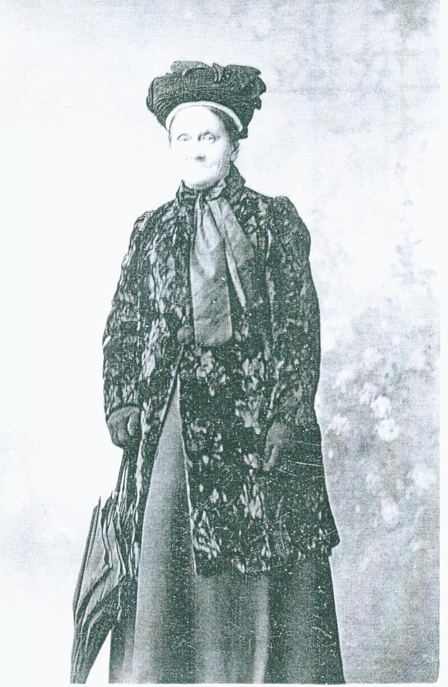
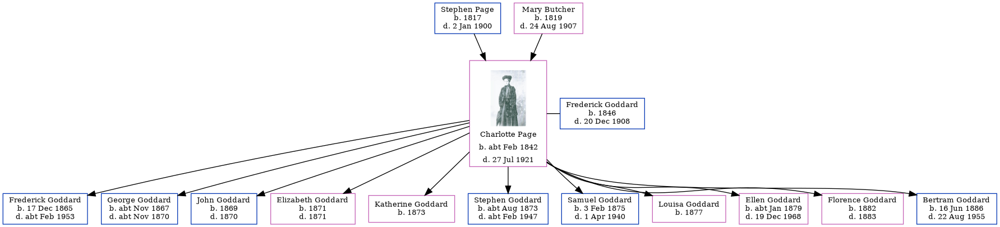

Charlotte Ann Goddard (née Page) cFeb 1842 - 1921
[ Home ] | [ Calendar ] | [ Surnames Index ] | [ Errors ] | [ Family History ]A laundress and the child of Stephen Page (an agricultural labourer) and Mary Butcher, Charlotte Page, the first cousin three-times-removed on the father's side of Nigel Horne, was born in Hawkinge, Kent, England c. Feb 18421,2,3, was baptised in Folkestone, Kent, England on 6 Feb 1842 and also married Frederick Goddard (a plumber's labourer with whom she had 11 children: Frederick Thomas, George Stephen, John, Elizabeth Jane, Katherine, Stephen Page, Samuel, Louisa J, Ellen Charlotte, Florence Julia and Bertram Charles) there at Christ Church on 10 Sept 18656.
During her life, she was living on Gibraltar Lane in Folkestone on 30 Mar 18511; on Mill Lane in Folkestone on 7 Apr 186114; at Back Berkley Place Cottage in Folkestone on 2 Apr 187110; at Foord Road in Folkestone on 3 Apr 188111; and at 65 Foord Road in Folkestone on 5 Apr 18919, on 31 Mar 190112, on 2 Apr 191113 following the death of her husband on 20 Dec 1908 and in 19198.
She died on 27 Jul 1921 at 49 St John's Street in Folkestone3,4,5 and was buried at Cheriton Road Cemetery, Folkestone on 30 Jul 19217.
Parents
- Stephen was born in 1817
- Mary Julia was born in 1819
Children
- Frederick Thomas was born on 17 Dec 1865
- George Stephen was born c. Nov 1867
- John was born in 1869
- Elizabeth Jane was born in 1871
- Katherine was born in 1873
- Stephen Page was born c. Aug 1873
- Samuel was born on 3 Feb 1875
- Louisa J was born in 1877
- Ellen Charlotte was born c. Jan 1879
- Florence Julia was born in 1882
- Bertram Charles was born on 16 Jun 1886
Citations
- 1851 England, Wales & Scotland Census - Findmypast (was age 9 and the daughter of the head of the household)
- England & Wales births 1837-2006 - Findmypast
- England & Wales deaths 1837-2007 - Findmypast
- England Billion Graves cemetery index - Findmypast
- Kent, Folkestone Cheriton Road Cemetery Memorial Inscriptions - Findmypast
- Kent Marriages And Banns - Findmypast
- https://www.findagrave.com/memorial/205770983/charlotte-ann-goddard
- http://freepages.rootsweb.com/~folkestonefamilies/genealogy/joan.htm
- 1891 England, Wales & Scotland Census - Findmypast (was age 48 and the wife of the head of the household)
- 1871 England, Wales & Scotland Census - Findmypast (was age 27 and the wife of the head of the household)
- 1881 England, Wales & Scotland Census - Findmypast (was age 34 and the wife of the head of the household)
- 1901 England, Wales & Scotland Census - Findmypast (was age 59 and the wife of the head of the household)
- 1911 Census for England & Wales - Findmypast (was age 69 and the head of the household)
- 1861 England, Wales & Scotland Census - Findmypast (was age 19 and a servant in the household)
Notes
Letters to America From Folkestone: freepages.rootsweb.com.
Media
Charlotte Ann Page

Charlotte Ann Page
England & Wales births 1837-2006 - BMD/B/1842/1/IR/000743/117
England & Wales deaths 1837-2007 - BMD/D/1921/3/AZ/000299/041
1891 England, Wales & Scotland Census - GBC/1891/0006012123
Kent marriages and banns - GBPRS/CANT/M/97000284/2
England Marriages 1538-1973 - R_848276891/2
England Marriages 1538-1973 - R_848278398/2
England & Wales marriages 1837-2005 - BMD/M/1865/3/HZ/000657/029
England Births & Baptisms 1538-1975 - R_885258373
England Billion Graves cemetery index - US/BMD/BILLION/5/000029067098
Kent, Folkestone Cheriton Road Cemetery memorial inscriptions - GBPRS/KENT/MIS00003534
1871 England, Wales & Scotland Census - GBC/1871/0014384998
1881 England, Wales & Scotland Census - GBC/1881/0004951840
1901 England, Wales & Scotland Census - GBC/1901/0005830955
1911 Census for England & Wales - GBC/1911/RG14/04640/0359/1
1861 England, Wales & Scotland Census - GBC-1861-0003618423
Family Tree
Map
Generated by ged2site. Last updated on Jul 3, 2024
Known Issues
freepages.rootsweb.com in notes is not found
freepages.rootsweb.com in notes is not found